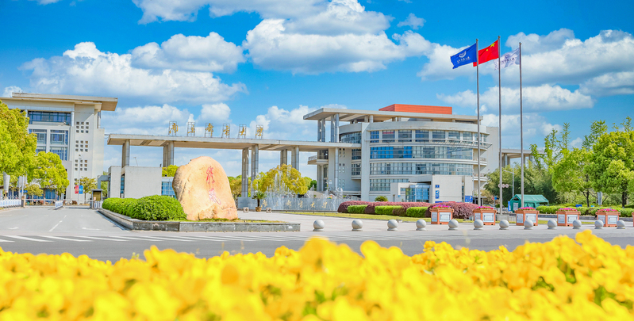

图片来源：南京邮电大学官网NEW STUDENT PATH
先解决眼前的事，再慢慢认识南邮。
EIGHT GUIDES
八个入口，按需要直接查看。
入学准备
校园生活
学习成长
01
入学准备
02
校园地图
仙林校区位置与周边地点
入学准备
03
宿舍评价
浏览 12 个宿舍片区
入学准备
04
作息时间
晨跑与教学活动时间表
校园生活
05
南邮美食
从一日三餐开始熟悉校园
校园生活
06
南邮风光
从 12 张照片看见校园日常
学习成长
07
社团一览
浏览并筛选 166 个社团
学习成长
08
官方竞赛目录
查询 92 项校级认定项目
学习成长
专业指南
查看 2026 年转专业计划与细则
模块照片使用项目内南邮实拍；宿舍图片来源于南京邮电大学后勤管理处 2022 年改造资料。
OFFICIAL SOURCES